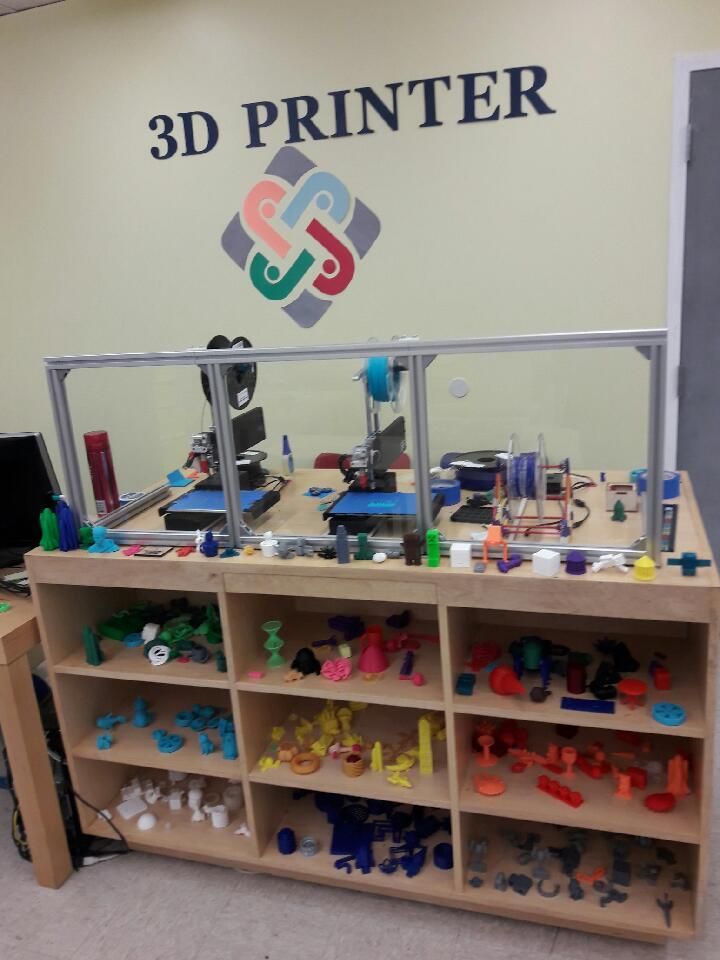

What is 3D Printing?
3D printing is a technology that has captivated the imagination of the world since the concept opened up a world of creative, medical, and futuristic possibilities. 3D printing usually refers to the general process of building up a physical object based on a digital creation. The core of this technology is the layered construction method that allows the print to take any form, limited only by the precision of the printer and the strength of the material being used. 3D prints can be made of a variety of materials, ranging from plastics to sandstone to edible foodstuffs. 3D models can be generated in many ways, and have specific file types that can be infinitely scaled up and down for printing. Once a file is placed into a piece of software like Cura, it is formatted, sized, and prepared for printing.
Once the print launches, different types of printers naturally print differently, depending on their material, technique, etc. One of the most common types of commercial 3D printers is the MakerBot. The MakerBot usually uses a type of plastic known as PLA, similar to the kind of plastic used to make Lego. The model is printed from the ground up, melting the plastic and drawing with very small lines over and over to build up the structure of the print, whatever it may be. The interior of the print is usually a lattice of squares. The printer will hold up parts of the print that may extrude away from the main structure of the printed object by printing additional supports designed to be broken off once the print is completed. Though the most common use currently is likely rapidly prototyping designs, the future of 3D printing is extremely promising both in manufacturing and medical fields.